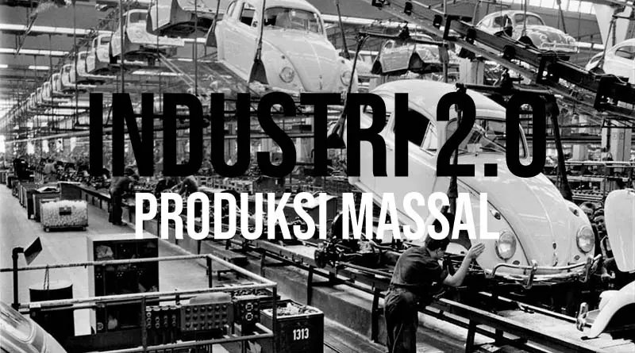
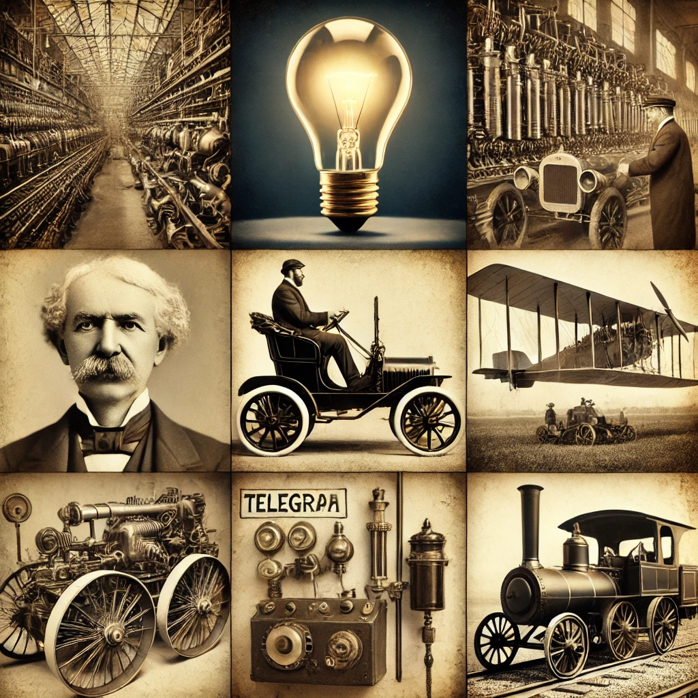
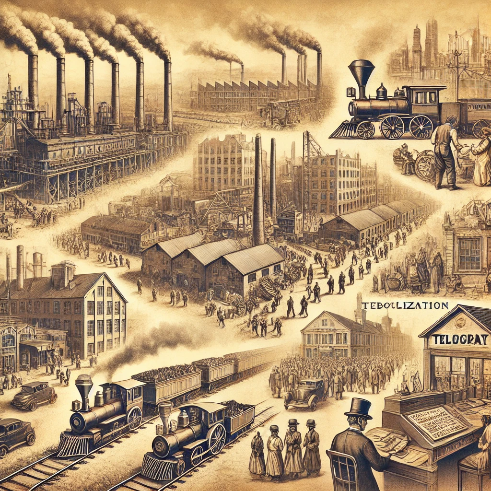
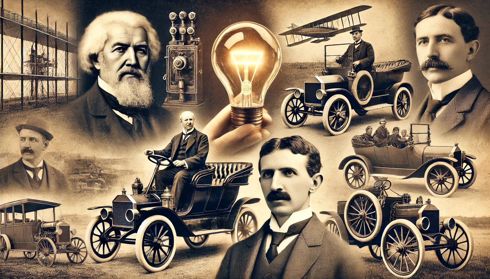

-

(Ruanglaptop)
Sejarah Singkat
Revolusi Industri Kedua, yang berlangsung antara tahun 1870 hingga 1914, membawa perubahan signifikan dalam metode produksi melalui penerapan produksi massal. Salah satu inovasi utama dalam periode ini adalah pengenalan jalur perakitan oleh Henry Ford, yang memungkinkan produksi barang dalam jumlah besar dengan biaya lebih rendah dan efisiensi yang lebih tinggi. Selain itu, penemuan dan pemanfaatan listrik memungkinkan pengoperasian mesin-mesin listrik dalam proses produksi, menggantikan tenaga uap dan meningkatkan efisiensi produksi. Kemajuan dalam transportasi, seperti ekspansi jaringan kereta api dan kapal uap, serta inovasi dalam komunikasi seperti telegraf dan telepon, juga mempercepat pergerakan barang, orang, dan informasi. Periode ini membawa perubahan besar dalam struktur sosial dan ekonomi, termasuk urbanisasi, peningkatan produktivitas, dan perubahan pola kerja masyarakat.
(Kompas.com)
-

Latar Belakang
(Kompas.com)
Revolusi Industri 2.0 pada akhir abad ke-19 hingga awal abad ke-20 dipengaruhi oleh kemajuan ilmu pengetahuan dan teknologi, seperti listrik oleh Michael Faraday dan lampu pijar oleh Thomas Edison, yang memungkinkan industri beralih dari tenaga uap ke listrik. Produksi massal dan standarisasi, terutama melalui jalur perakitan Henry Ford, meningkatkan efisiensi manufaktur. Perkembangan industri baja dan kimia menyediakan bahan penting bagi sektor industri, sementara ekspansi transportasi seperti kereta api dan kapal uap serta inovasi komunikasi seperti telegraf dan telepon mempercepat distribusi barang dan informasi. Urbanisasi yang pesat akibat perpindahan tenaga kerja ke kota-kota industri juga mendorong pertumbuhan ekonomi dan perubahan sosial yang signifikan, menciptakan lingkungan yang mendukung terjadinya Revolusi Industri Kedua.
(WIkipedia)
-

(Chatgpt)
Penemuan
Revolusi Industri 2.0 melahirkan penemuan penting yang mengubah industri dan kehidupan manusia. Listrik mulai digunakan luas dengan generator dan lampu pijar Edison, sementara jalur perakitan Henry Ford serta mesin diesel Rudolf Diesel meningkatkan efisiensi produksi. Transportasi berkembang dengan mobil Karl Benz dan pesawat Wright bersaudara, sedangkan komunikasi maju berkat telepon Bell dan telegraf nirkabel Marconi. Industri baja tumbuh melalui proses Bessemer, dan pupuk sintetis Haber-Bosch meningkatkan hasil pertanian. Penemuan-penemuan ini mendorong industrialisasi global dan mempercepat modernisasi di berbagai sektor.
(WIkipedia)
-

(Chatgpt)
Dampak
Revolusi Industri 2.0 membawa pertumbuhan ekonomi pesat dengan produksi massal yang lebih efisien, mendorong urbanisasi besar-besaran dan perubahan sosial akibat sistem kerja pabrik. Inovasi seperti listrik, telepon, dan kereta api mempercepat komunikasi serta mobilitas, sementara ekspansi industri meningkatkan eksploitasi sumber daya alam, menyebabkan polusi dan dampak lingkungan. Kondisi kerja yang buruk memicu gerakan buruh untuk menuntut hak pekerja, sedangkan infrastruktur seperti jaringan listrik dan rel kereta memperkuat integrasi ekonomi global. Transformasi ini membentuk dasar bagi perkembangan teknologi dan masyarakat modern saat ini.
(Kompas.com)
-

(Chatgpt)
Tokoh Penting
Tokoh penting dalam Revolusi Industri 2.0 meliputi:
1. Thomas Edison (Penemu lampu pijar)
2. Alexander Graham Bell (Penemu telepon)
3. Nikola Tesla (Penemu arus bolak-balik)
4. Henry Ford (Yang memproduksi massal mobil)
5. Wright Bersaudara (Penemu pesawat terbang)
6. Guglielmo Marconi (Penemu telegraf nirkabel)
7. Rudolf Diesel (Penemu mesin diesel).
Mereka berperan besar dalam kemajuan industri dan teknologi.(WIkipedia)